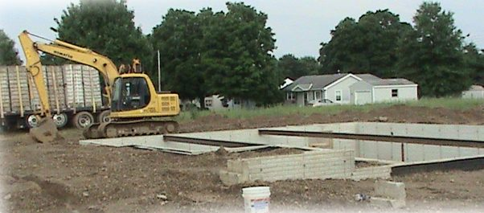

HOME /03 / FOUSS POURED WALLSSolid walls.
Solid walls.
Strong foundations.
Basements and retaining walls. Simonton brick pattern forms, reinforced with rebar.

Fouss Poured Walls use Simonton brick pattern forms. We are capable of pouring walls from 1 to 16 ft. high and from 6 to 24 inches thick with normal wall thickness being from 6" to 12" thick. Typical basement heights are 8, 9 or 10 ft. high.
Prices can include excavation work, french drains inside and out of the basement, pouring the basement floor, and waterproofing the walls. Environmentally friendly waterproofing done by DG Waterproofing of Whipple, Ohio.
Discuss your poured wall project ↗1–16 FT.WALL HEIGHTS
6–24 IN.WALL THICKNESSES
8 / 9 / 10 FT.TYPICAL BASEMENT HEIGHTS
THE FINISH IS IN THE FORMConcrete strength.
Concrete strength.
Brick-pattern character.
Simonton brick pattern forms for poured concrete walls.